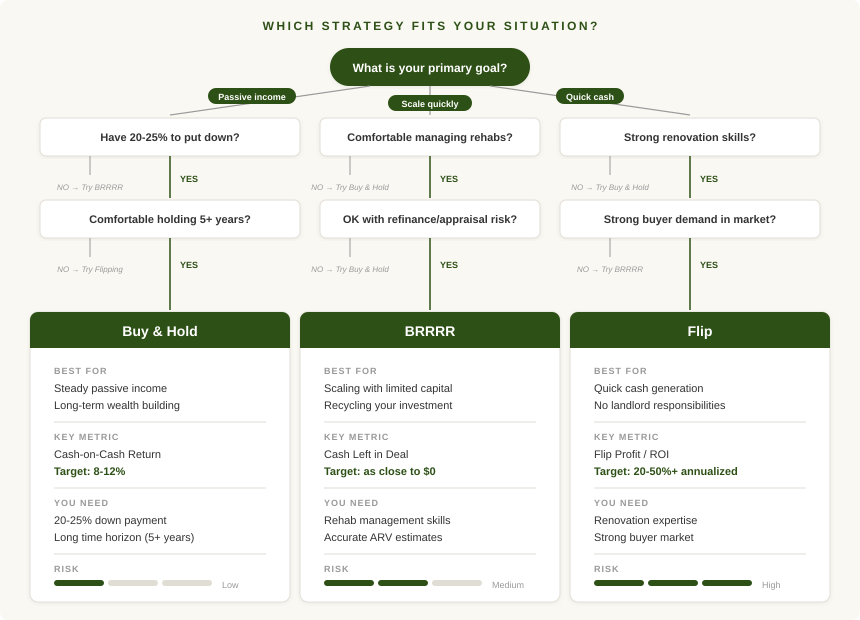

In my work at the multi-family office, I have exposure to institutional real estate funds that invest in large commercial properties. These funds use a strategy called "value-add": they buy underperforming assets at a discount, renovate or reposition them to increase income, then recapitalize (usually through a refinance or sale) to return equity to investors. The math behind it is elegant. You are not just buying cash flow, you are creating value through execution, then recycling that capital into the next deal.
When my wife and I started thinking seriously about investing in real estate on our own, I wanted to apply the same framework at a smaller scale. Single-family homes and small multifamily properties instead of office buildings and apartment complexes, but the same core logic: buy below value, force appreciation through renovation, and recapitalize to get your money back.
I did some research and discovered there was an entire community of smaller-scale investors doing exactly this. They called it BRRRR investing, short for Buy, Rehab, Rent, Refinance, Repeat. The strategy was popularized by David Greene, who wrote Buy, Rehab, Rent, Refinance, Repeat and helped build a massive community around it through BiggerPockets. The more I read, the more I realized this was not some fringe idea. It was the same institutional playbook, just sized down for everyday investors.
But BRRRR is not the only way to approach a deal. The same property that works as a BRRRR project might also make sense as a traditional buy-and-hold rental or a quick flip. The numbers change dramatically depending on which path you choose. And sometimes the market, the property, or an unexpected $15,000 plumbing bill makes the decision for you.
Here is how each approach works, what the trade-offs look like, and how to figure out which one fits your situation.
Buy & Hold: The Long Game
Buy and hold is the most traditional approach to real estate investing. You purchase a property, typically with 20 to 25 percent down on a conventional mortgage, rent it to tenants, and hold it for years or decades. It is the strategy most people think of when they hear "rental property."
Your returns come from four sources that compound over time. First, monthly cash flow: the difference between what your tenants pay in rent and what you pay in expenses (mortgage, taxes, insurance, maintenance, vacancy reserves). Second, appreciation: the property's value rising over time, both from market forces and from any improvements you make. Third, mortgage paydown: every month your tenants' rent is paying down your loan balance, building equity you do not see in your bank account but that is absolutely real. And fourth, tax benefits: depreciation allows you to shelter a portion of your rental income from taxes, which can meaningfully improve your after-tax returns.
The appeal of buy and hold is its simplicity and predictability. You are not trying to time a renovation or guess where the market will be in six months. You buy a stabilized property that is already generating income, and you let time do the heavy lifting. A reasonable target for cash-on-cash return on a buy-and-hold deal is somewhere in the range of 8 to 12 percent in most markets, though this varies significantly depending on where you invest and how much leverage you use.
The trade-off is that your capital gets locked up. A typical buy-and-hold deal requires 20 to 25 percent down plus closing costs and reserves. That money is tied to that one property for as long as you own it. If you have $100,000 to invest, you are probably buying one property, maybe two. Returns build slowly, and the real payoff often does not become obvious until years down the road.
Buy and hold works best when you have capital to deploy, want reliable passive income, are comfortable with a long time horizon, and prefer simplicity over optimization.
BRRRR: Recycling Your Capital
BRRRR stands for Buy, Rehab, Rent, Refinance, Repeat. It is the strategy my wife and I used to get started, and it remains the backbone of our portfolio.
The concept is straightforward. You buy a distressed property below market value, renovate it to force appreciation, rent it out at the improved market rate, then refinance based on the new, higher after-repair value (ARV). If you have executed well, the refinance pulls back most or all of the cash you originally invested. You then take that recovered capital and repeat the process on the next property.
The power of BRRRR is capital recycling. In a traditional buy-and-hold deal, you put $40,000 down on one property and that money is gone until you sell. With BRRRR, you might put $40,000 into a deal and get $35,000 back at refinance, leaving only $5,000 in the deal. Now you take that $35,000 and do it again. Over the course of a few years, you can potentially build a portfolio of five or six properties from the same initial capital that would have bought you one property under buy and hold.
The math on cash-on-cash return can look extraordinary. If you have $5,000 left in a deal that generates $3,600 a year in cash flow, your cash-on-cash return is 72 percent. In some cases, you pull back more than you put in and the return is technically infinite. Those numbers are real, but they require precise execution.
And that is where the risk lives. Our first BRRRR taught us this the hard way. We did everything right on the renovation, the property rented quickly, and we moved to refinance. Then the appraisal came back low. The appraiser was taking a significant discount because the home was a slab foundation without a basement. On paper, the after-repair value supported our numbers. In the appraiser's model, it did not. We had to work with our lender and push back on the appraisal to eventually get most of our cash out, but it was a stressful process and a reminder that the refinance step is not just a formality. It is the step that makes or breaks the entire strategy.
Beyond appraisal risk, rehab cost overruns are the other common killer. A $30,000 budget that turns into $50,000 can turn a home run into a break-even deal. You need a reliable contractor who can execute on time and on budget, and you need enough experience to know what surprises might be hiding behind the walls before you close.
BRRRR is ideal for investors who want to scale quickly, are comfortable managing renovations, and can tolerate more complexity and execution risk. It is the fastest path to a multi-property portfolio if you can pull it off consistently.
Flip: Quick Profit, No Tenants
Flipping is the most straightforward strategy conceptually. You buy a property below market value, renovate it, and sell it for a profit. There are no tenants to manage, no long-term hold period, and no ongoing landlord responsibilities. Your return comes entirely from the spread between your all-in cost and the sale price.
A typical flip timeline runs three to nine months from purchase to sale. You buy, you renovate, you list, you close. Annualized returns can be impressive, often 20 to 50 percent or more on your invested capital. And the profit is immediate. When the deal closes, the money is in your account.
But flipping is fundamentally different from the other two strategies in one important way: it is a job, not a portfolio. Each flip is a standalone transaction. When it is done, you have profit but no asset. There is no monthly cash flow, no appreciation, no mortgage being paid down by a tenant. You have to find and execute the next deal to keep earning.
Flipping also carries some tax disadvantages that are worth understanding. Profits from flips are taxed as ordinary income, not at the lower capital gains rates that apply to properties held longer than a year. Depending on your tax bracket, this can take a meaningful bite out of your returns. There is also no depreciation benefit since you are not holding the property long enough to take it.
Market timing matters more with flips than with the other strategies. If the market softens during your renovation and you cannot sell at the price you underwrote, your profit can evaporate quickly. Holding costs (mortgage payments, insurance, utilities, property taxes) continue to pile up every month the property sits unsold.
Flipping works best when you have strong renovation skills or a trusted team, buyer demand is healthy in your market, and you want to generate cash rather than build a long-term portfolio. Many investors use flipping as a capital generation tool: flip a few properties to build up cash, then deploy that cash into buy-and-hold or BRRRR deals for long-term wealth.
The Lines Between Strategies Are Not Always Clean
One of the things I have learned from doing this in practice is that deals do not always cooperate with the strategy you picked going in.
We had a property that penciled out well as a BRRRR. The purchase price was right, the projected ARV supported a refinance that would pull most of our capital back, and the rental comps were strong. So we started down the BRRRR path. Then we ran into significant unforeseen expenses during the renovation. The scope and cost grew well beyond our original budget, and the numbers no longer worked as a BRRRR. We would have had far too much cash left in the deal after the refinance.
So we pivoted. We transitioned from a BRRRR-level renovation to a high-end rehab designed to capture the top of the market as a flip. Higher finishes, better materials, the kind of details that justify a premium sale price. It worked out, but it only worked because we had analyzed the deal across multiple strategies before we started and understood where the exit options were.
That experience reinforced something I now believe strongly: you should never evaluate a property through the lens of just one strategy. If a deal works as a BRRRR, it should also work as a flip, and you should know the buy-and-hold numbers too. Not because you plan to use all three, but because things go wrong. Rehab costs surprise you. Appraisals come in low. Markets shift. When that happens, you need to know your alternatives.

How I Think About Strategy Selection
At the institutional level, fund managers do not pick a strategy and then go find deals that fit. They evaluate the opportunity first and then determine the best execution path. I try to apply the same discipline to every deal I look at.
The first question is not "do I want to BRRRR this?" The first question is "what are the numbers across all three approaches?" Sometimes a property that looks marginal as a buy-and-hold turns out to be an excellent BRRRR candidate because the forced appreciation math works in your favor. Other times, the flip numbers are so strong that holding the property for rental income would actually leave money on the table. You cannot see those dynamics if you are only running one set of numbers.
After that, strategy selection comes down to three things: your capital situation, your capacity, and the specific property. If you have limited capital and want to grow quickly, BRRRR makes sense as long as you can execute. If you have capital and want simplicity, buy and hold is hard to beat. If you need cash now and have the renovation skills, flipping generates liquidity faster than anything else.
Most experienced investors end up using more than one strategy. My wife and I have done all three. The important thing is not picking the "right" strategy in the abstract. It is having the discipline to evaluate every deal on its own terms and the flexibility to pivot when the deal demands it. The strategy matters less than the rigor you bring to the numbers before you commit.
Compare all three strategies on your next deal
Open the Deal Analysis Tool